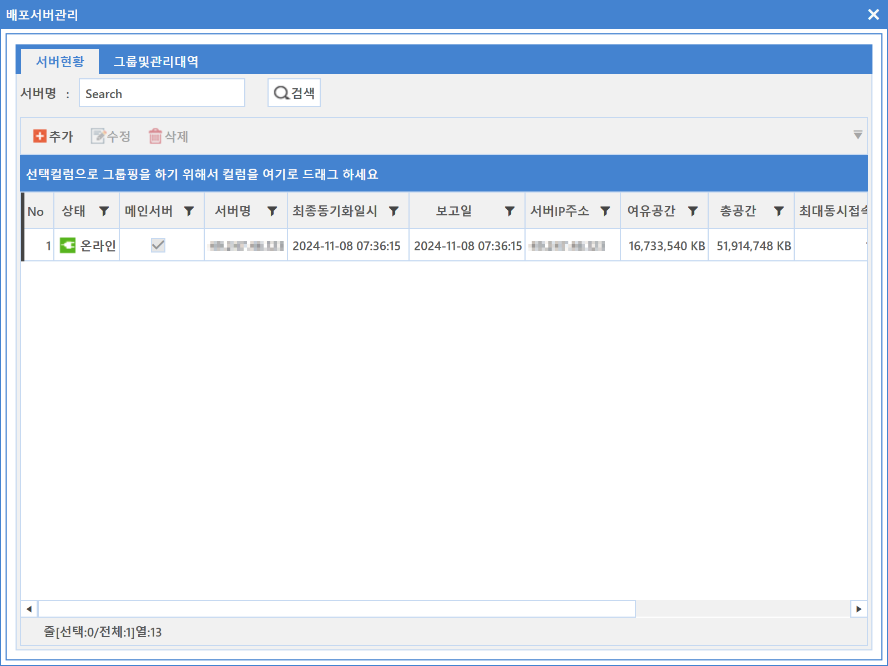
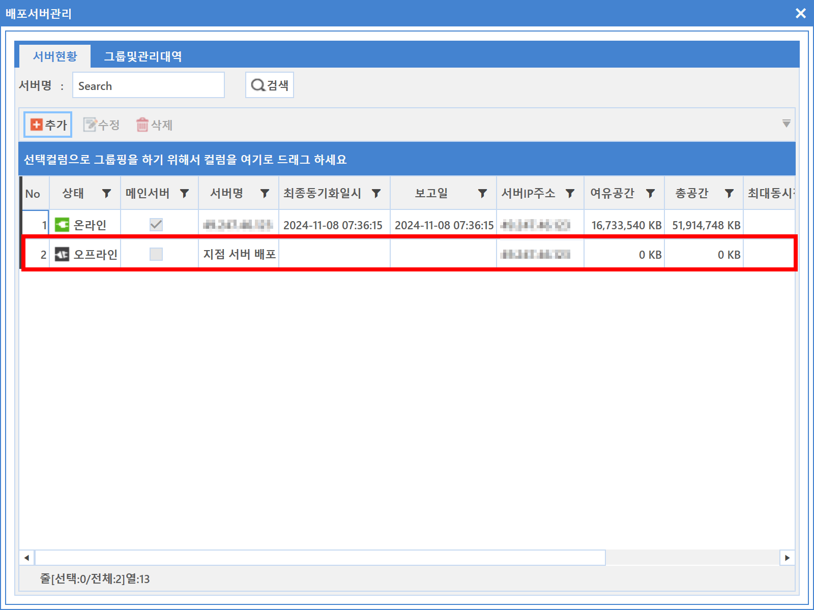
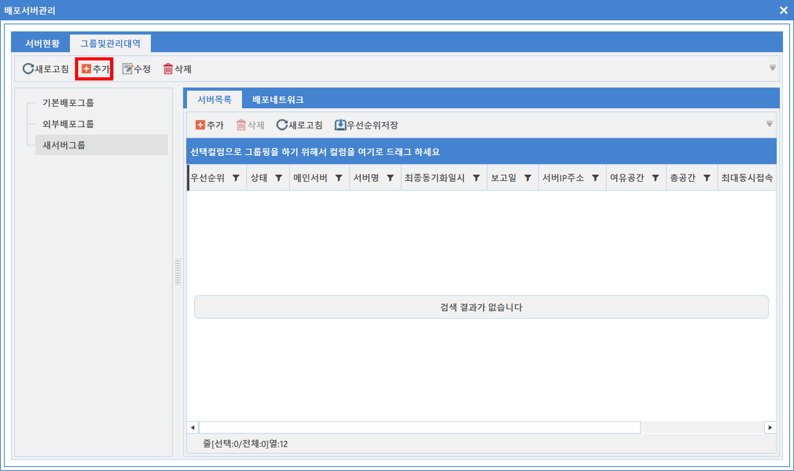
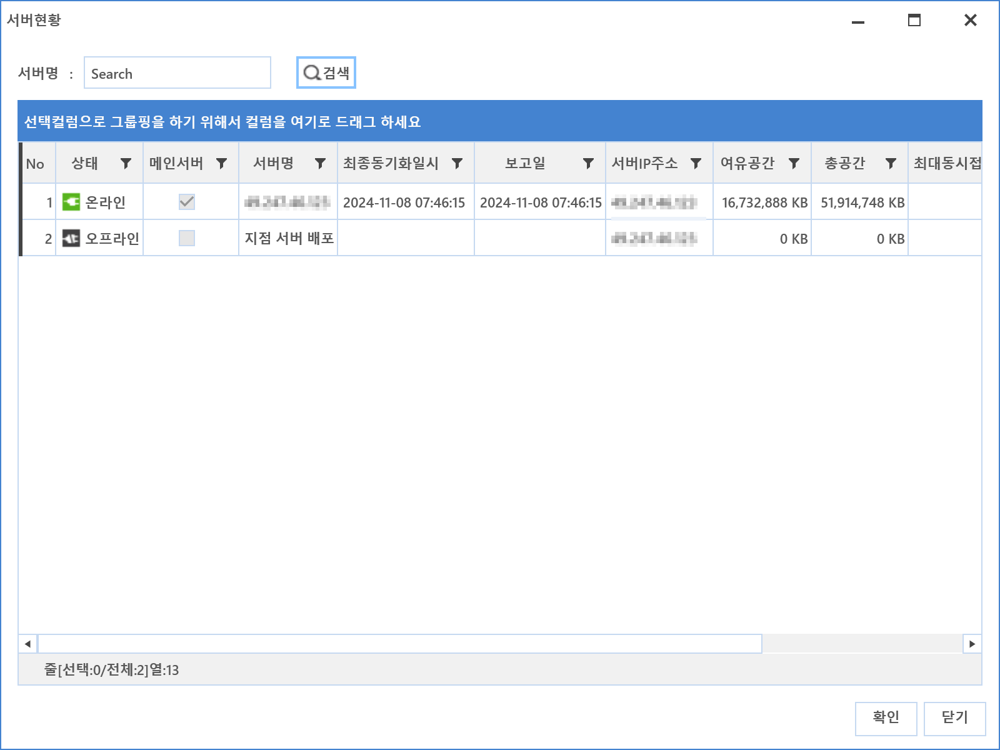
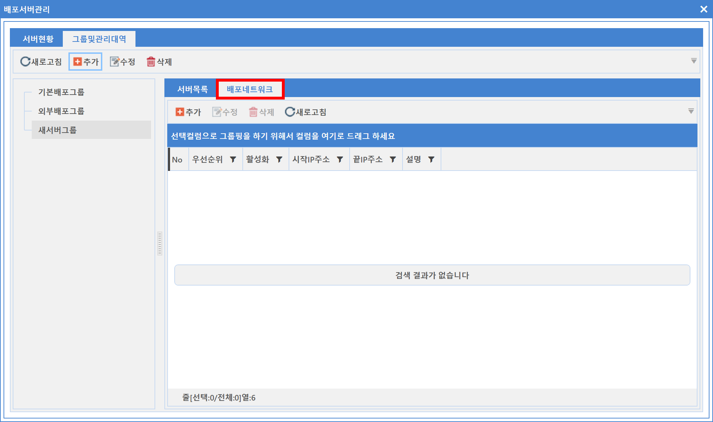
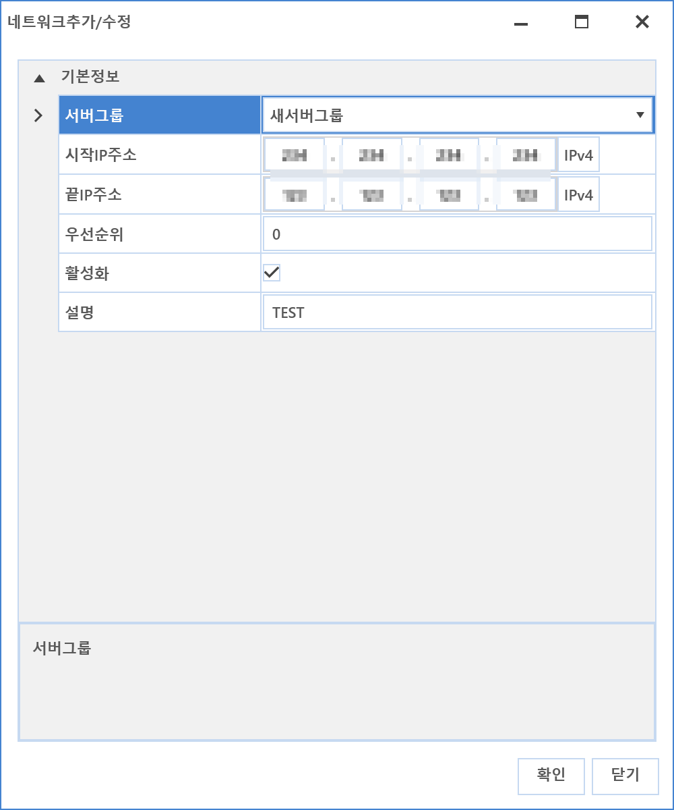

6-1-3. 서버관리
6-1-3. 서버관리
Source: https://www.sweeper.or.kr/etc/manual/613.html
6-1-3. 서버관리


배포서버는 여러대를 구성하여 운영할 수 있습니다.
다수의 서버 운영 상태 확인을 할 수 있으며, 각 서버별 운영 환경설정을 할 수 있습니다.


설정방법
- 서버 현황 Tab을 선택 합니다.
-
추가 버튼을 클릭합니다. "서버추가/수정" 화면이 팝업되면 해당 정보를 입력합니다.

-
서버이름 : 서버 명칭을 입력합니다.
- IP주소 : 서버 IP주소를 입력합니다.
-
메인배포여부 : 메인서버 설정을 합니다.
-
메인배포 서버는 한대만 설정 가능합니다.
-
최대동시접속수 : 최대접속 가능한 에이전트 수량을 설정합니다.
-
서버 및 Network 과부하를 줄이고 효율적인 사용을 위한 설정입니다.
-
설정이 완료되면 확인 버튼을 클릭합니다.
-
추가된 정보를 확인합니다.
 -
배포 서버 프로그램이 설치된 후 Data 서버와 통신되어야만 온라인 표시가 됩니다.
-
그룹 및 관리 대역 Tab을 선택합니다.
-
그룹 및 관리 대역은 관리 운영 서버를 등록하고 해당 서버그룹에서 담당하는 배포 네트워크를 설정할 수 있습니다.
- 추가 버튼을 클릭하면 새 서버 그룹이 생성됩니다.
 - 서버 목록 Tab을 선택한 뒤 추가 버튼을 클릭합니다.
- 서버 현황이 팝업되면 검색버튼을 클릭한 뒤 대상 서버를 선택하여 확인 버튼을 클릭합니다.
 - 서버 선택이 완료되면 배포 네트워크 Tab을 선택합니다.
 -
추가 버튼을 클릭하면 네트워크 추가/수정 화면이 팝업됩니다. 해당 정보를 입력한 뒤 확인 버튼을 클릭합니다.
 -
서버그룹 : 해당 서버 그룹을 선택합니다.
- 시작 IP : 대상 네트워크 시작 IP를 입력합니다.
- 끝 IP : 대상 네트워크 마지막 IP를 입력합니다.
- 체크우선순위 : 우선 순위를 설정합니다. "0"이 최우선 순위 입니다.
- 활성화 여부 : 사용여부를 설정합니다.
-
설명 : 확인할 수 있는 간단한 설명을 입력합니다.
-
추가된 정보를 확인합니다.

© Copyright SWeeper Inc.. All Rights Reserved